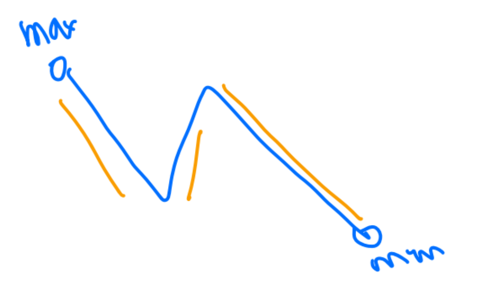
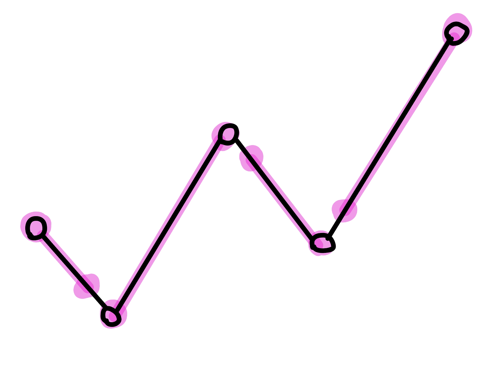
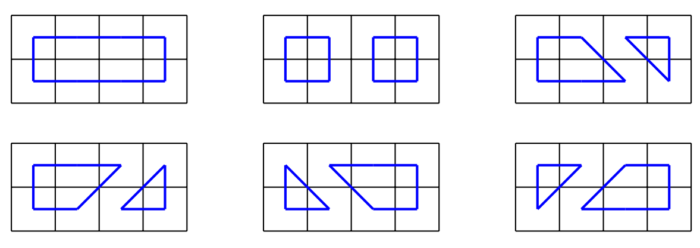
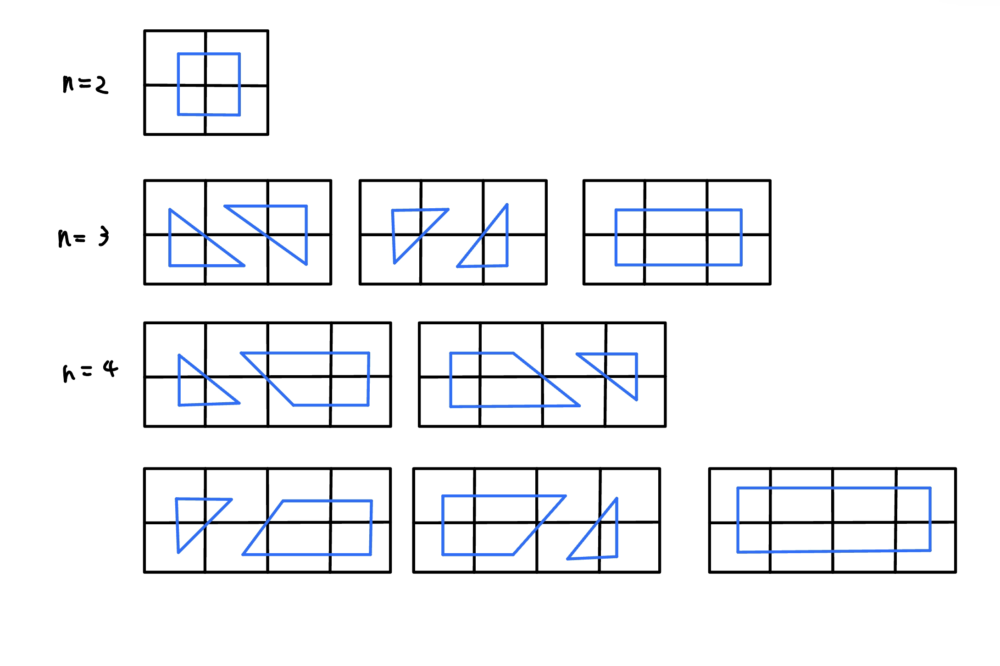
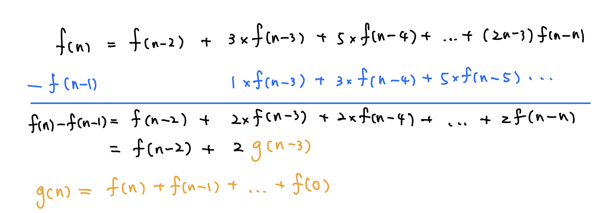
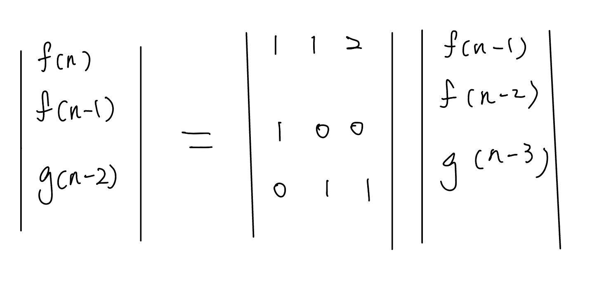
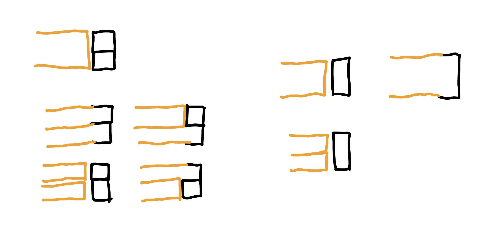
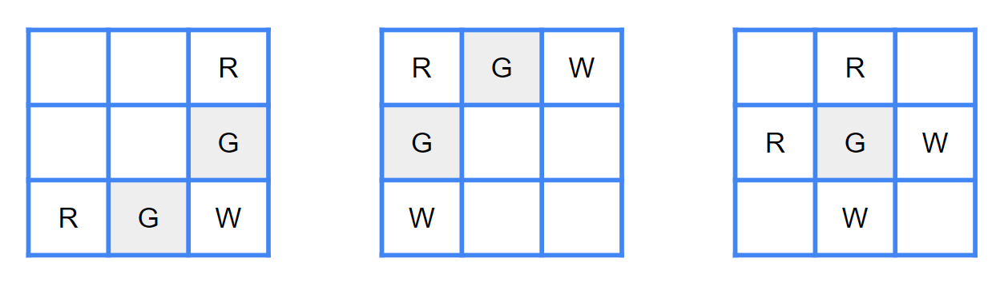
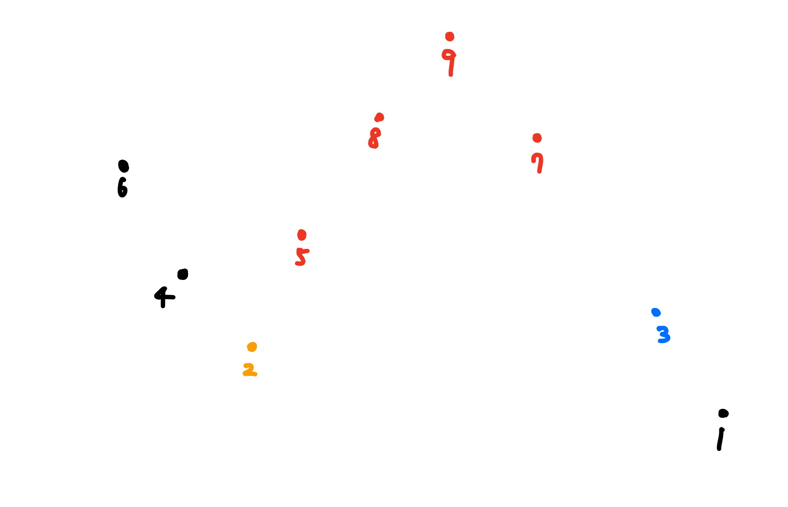

雜題整理
2023 TOI 4 模 p2. 整除序列 (Divide) 有一個長度為 \(n\) 的陣列 \(a_1,\ldots, a_n\) ，你只知道每個數字的其中一個 character，要構造出陣列，使得相鄰的兩個數字互為因數或倍數關係，且補上的 character 數量要越少越好
\(2\le n\le 10^5\)
思路
可以觀察到每一項的數字都不會太大，所以可以先猜一個 threshold T
然後去 dp(i, x) : 0~i 要讓 a[i] = x 最少要填的 character 數量
f(i, k) : 0~i 要讓 a[i]|k 或 k|a[i] 最少要填的 character 數量
f(i, k) = min{dp(i, x)} 其中 x|k or k|x 且 dp(i, x) 有解
dp(i + 1, k) =
可以先預處理 0~T 每個數字會不會出現某個 character exist[x][0~9]。這樣對於每個 i 都要做一次篩法從 dp(i, x) 轉移到 f(i, k)，複雜度 O(n * T * log(T))。
CF 1860 D. Balanced String 給你一個由 01 組成的字串 s，在一次操作下，你可以 swap 任意兩項。問最少幾次操作可讓 s 的逆序數對數量（10） = 正序數對數量（01）
\(3\le |s| \le 100\)
思路
先想考慮將這個字串 ramdom shuffle 後，怎麼計算最少要 swap 幾次 ? 其實只要看 a[i] != b[i] 的數量除以 2 即可（因為每次 swap 一定可以換好兩個）
dp[i][j][k] : 代表到第 i 個位置為止共放了 j 個 1，10 數量為 k，跟原本的 a[i] != b[i] 的數量最少有幾個
dp[i][j][k] 轉移到 :
這樣可能會 MLE，考慮到 dp[i + 1][ ][ ] 只用到 dp[i][ ][ ]，所以可以滾動。
code
#include <bits/stdc++.h>
using namespace std ;
#define ll long long
#define pb push_back
#define all(x) (x).begin(), (x).end()
#define pii pair<int, int>
const int mod = 998244353 , N = 105 ;
int dp [ 2 ][ N ][ N * N ];
void solve () {
string s ; cin >> s ;
int n = s . length ();
int tot = 0 , cnt0 = 0 , cnt1 = 0 ;
for ( char c : s ) {
( c == '0' ? cnt0 : cnt1 ) ++ ;
}
tot = n * ( n - 1 ) / 2 ;
tot -= cnt0 * ( cnt0 - 1 ) / 2 ;
tot -= cnt1 * ( cnt1 - 1 ) / 2 ;
assert ( tot % 2 == 0 );
for ( int i = 0 ; i < 2 ; ++ i ) {
for ( int j = 0 ; j < N ; ++ j ) {
for ( int k = 0 ; k < N * N ; ++ k ) {
dp [ i ][ j ][ k ] = 1 << 30 ;
}
}
}
int now = 0 ;
dp [ 1 ][ 0 ][ 0 ] = 0 ;
for ( int i = 0 ; i < n ; ++ i ) {
for ( int j = 0 ; j < N ; ++ j ) {
for ( int k = 0 ; k < N * N ; ++ k ) {
dp [ now ][ j ][ k ] = 1 << 30 ;
}
}
for ( int j = 0 ; j <= n ; ++ j ) {
for ( int k = 0 ; k <= n * ( n - 1 ) / 2 ; ++ k ) {
if ( dp [ now ^ 1 ][ j ][ k ] <= n ) {
int c0 = ( s [ i ] == '1' ), c1 = c0 ^ 1 ;
// 0
dp [ now ][ j ][ k + j ] = min ( dp [ now ][ j ][ k + j ], dp [ now ^ 1 ][ j ][ k ] + c0 );
// 1
dp [ now ][ j + 1 ][ k ] = min ( dp [ now ][ j + 1 ][ k ], dp [ now ^ 1 ][ j ][ k ] + c1 );
}
}
}
now ^= 1 ;
}
cout << dp [ now ^ 1 ][ cnt1 ][ tot / 2 ] / 2 << '\n' ;
}
int main () {
ios :: sync_with_stdio ( false ), cin . tie ( 0 );
int t = 1 ;
// cin >> t;
while ( t -- ) {
solve ();
}
}
CF 1861 E. Non-Intersecting Subpermutations 給 \(n,k\) ，對於一個長度為 \(n\) ，每個元素皆在 \(1\ldots k\) 的 array，cost 的計算方式為「最多可切出幾段 \(1\ldots k\) 的 permutation」，輸出所有可能的 array 的 cost 總合為多少
\(2\le k\le n\le 4000\)
思路
想法 : 對於一個 subarray，貢獻了幾個 array
dp[i] = 有幾個長度為 i 的 array 滿足 subarray(i - k + 1, i) 是有貢獻到的
[i - k + 1, i] 一定要是一個 1~k 的 permutation，而之前的每一格我們擺 1~k 都可以，所以 initially dp[i] = k! * exp(k, i - k)
考慮要從 dp[i] 中扣掉不合法的 case，也就是有幾個 permutation 的結尾在 [i - k + 1, i) 就已形成。設 j \(\in\) [i- k + 1, i)，我們需要將 dp[i] -= dp[j] * (i - j)!
最後，對於每個 i，因為後面可以隨便擺，對答案的貢獻就是 dp[i] * exp(k, n - i)
參考自 : https://codeforces.com/blog/entry/119891?#comment-1064151
code
#include <bits/stdc++.h>
#define int long long
using namespace std ;
const int N = 4005 ;
const int M = 998244353 ;
int n , k ;
int dp [ N ], fac [ N ], powK [ N ];
void init () {
powK [ 0 ] = 1 ;
fac [ 0 ] = 1 ;
for ( int i = 1 ; i <= n ; i ++ ) {
powK [ i ] = ( powK [ i - 1 ] * k ) % M ;
fac [ i ] = ( fac [ i - 1 ] * i ) % M ;
}
}
signed main () {
cin >> n >> k ;
init ();
for ( int i = k ; i <= n ; i ++ ) {
dp [ i ] = ( fac [ k ] * powK [ i - k ]) % M ;
for ( int j = i - k + 1 ; j < i ; j ++ ) {
dp [ i ] = ( dp [ i ] - ( dp [ j ] * fac [ i - j ]) % M + M ) % M ;
}
}
int ans = 0 ;
for ( int i = k ; i <= n ; i ++ ) {
ans = ( ans + dp [ i ] * powK [ n - i ]) % M ;
}
cout << ans << '\n' ;
}
2022 IONC Day3 G. TypeRacer 2 (typeracer2) 給一個長度為 \(n\) 的陣列 \(a_1,\ldots ,a_n\) ，鍵盤左到右是 \(1, 2, \ldots, k\) ，兩隻手指頭一開始可放任意位置。手指從 \(i\) 到 \(j\) 會花 \(|i-j|\) ，輸出將陣列 \(a\) 打完的最少時間
\(1\le n, k\le 2\times 10^5\)
思路
dp(i, j) = 每次只動一隻手的條件下，打完第 i 個鍵，另隻手在 j 的最小 cost
\(dp(i,j) \to \begin{cases}dp(i+1, j) ,\space \text{cost}(a_{i}, a_{i+1}) \\ dp(i + 1, a_{i}) ,\space \text{cost}(j, a_{i+1}) \end{cases}\)
basecase: dp(1, 1~k) = 0, 其他 = INF
實作: 資料結構優化
我們把 \(dp(i + 1, a_{i})\) 單獨拉出來看
\(dp(i+1, a_i)=\min \limits_{j=1\ldots k} \{dp(i, j) + |a_{i+1} - j| \}\)
\(dp(i + 1, a_i) = \min \begin{cases} dp(i, j) + a_{i+1} - j \space \forall j \le a_{i+1} \\ dp(i, j) +j - a_{i+1} \space \forall j > a_{i+1} \end{cases}\)
所以我們只需要去維護兩顆線段樹 \(dp(i,j)+j, dp(i, j) - j\) 即可
code
#include <bits/stdc++.h>
#define int long long
#define pb push_back
using namespace std ;
const int INF = 2e18 ;
struct Node {
Node * lc = nullptr ;
Node * rc = nullptr ;
int l , r ;
int add = 0 , mn = 0 ;
Node ( int l , int r ) : l ( l ), r ( r ) {}
void pull () {
mn = min ( lc -> mn , rc -> mn );
}
void push () {
if ( add ) {
lc -> add += add ;
lc -> mn += add ;
rc -> add += add ;
rc -> mn += add ;
add = 0 ;
}
}
};
Node * build ( int l , int r ) {
Node * root = new Node ( l , r );
if ( l == r ) {
return root ;
}
int mid = ( l + r ) / 2 ;
root -> lc = build ( l , mid );
root -> rc = build ( mid + 1 , r );
root -> pull ();
return root ;
}
void add ( Node * root , int ml , int mr , int val ) {
if ( ml > mr ) return ;
if ( ml <= root -> l && root -> r <= mr ) {
root -> add += val ;
root -> mn += val ;
return ;
}
root -> push ();
if ( ml <= root -> lc -> r ) {
add ( root -> lc , ml , mr , val );
}
if ( root -> rc -> l <= mr ) {
add ( root -> rc , ml , mr , val );
}
root -> pull ();
}
int query ( Node * root , int ql , int qr ) {
if ( ql > qr ) return INF ;
if ( ql <= root -> l && root -> r <= qr ) {
return root -> mn ;
}
root -> push ();
int ret = INF ;
if ( ql <= root -> lc -> r ) {
ret = min ( query ( root -> lc , ql , qr ), ret );
}
if ( root -> rc -> l <= qr ) {
ret = min ( query ( root -> rc , ql , qr ), ret );
}
root -> pull ();
return ret ;
}
const int N = 2e5 + 5 ;
int n , k ;
int a [ N ];
signed main () {
cin >> n >> k ;
for ( int i = 1 ; i <= n ; i ++ ) {
cin >> a [ i ];
}
Node * root_del = build ( 1 , k );
Node * root_add = build ( 1 , k );
for ( int i = 1 ; i <= k ; i ++ ) {
add ( root_del , i , i , - i );
add ( root_add , i , i , + i );
}
for ( int i = 1 ; i < n ; i ++ ) {
// calculate dp(i + 1, a[i])
int dp = min ( query ( root_del , 1 , a [ i + 1 ]) + a [ i + 1 ],
query ( root_add , a [ i + 1 ] + 1 , k ) - a [ i + 1 ]);
// update dp(i + 1, *)
add ( root_del , 1 , k , abs ( a [ i + 1 ] - a [ i ]));
add ( root_add , 1 , k , abs ( a [ i + 1 ] - a [ i ]));
// update dp(i + 1, a[i])
int now = query ( root_del , a [ i ], a [ i ]) + a [ i ];
if ( dp < now ) {
add ( root_del , a [ i ], a [ i ], - now + dp );
add ( root_add , a [ i ], a [ i ], - now + dp );
}
}
int ans = INF ;
for ( int i = 1 ; i <= k ; i ++ ) {
ans = min ( ans , query ( root_del , i , i ) + i );
}
cout << ans << '\n' ;
}
TOI 2022 B. 打鍵盤 (keyboard) 給一個長度為 \(n\) 的字串 \(S\) ，一開始左手指在 F，右手指在 J，每次可將一隻手指移動一單位，輸出將字串 \(S\) 打完的最少次數
\(1\le n\le 10^4,S\) 僅由英文大寫字母構成
思路
先利用 Floyd Warshall 建好 dis(A-Z, A-Z)
dp(i, j) = 每次只動一隻手的條件下，打完第 i 個鍵，另隻手在 j 的最小 cost
\(dp(i,j) \to \begin{cases}dp(i+1, j) ,\space \text{cost}(a_{i}, a_{i+1}) \\ dp(i + 1, a_{i}) ,\space \text{cost}(j, a_{i+1}) \end{cases}\)
轉移從 dp(i, * ) 推到 dp(i + 1, * )，時間複雜度 O(26n)
CF 484D
CF 484 D. Kindergarten 給一個長度為 \(n\) 的陣列 \(a_1, \ldots ,a_n\) ，能將陣列切成好幾段，問每段的 max - min 加起來最大是多少
\(1\le n\le 10^6, -10^9 \le a_i \le 10^9\)
思路
我們可以發現，將陣列分成好幾段，若遇到轉折就切，一定是最好的。感性理解的話，就是將每個能用差值都用上

但在轉折處，會有一段貢獻不會選到，我們就要用 dp 到底計算選哪個比較好

code
#include <bits/stdc++.h>
#define int long long
using namespace std ;
const int maxn = 1e6 + 5 ;
int n ;
int a [ maxn ], dp [ maxn ];
void init () {
cin >> n ;
for ( int i = 1 ; i <= n ; i ++ ) {
cin >> a [ i ];
}
}
void solve () {
int j = 1 ;
for ( int i = 2 ; i <= n ; i ++ ) {
dp [ i ] = max ( dp [ j ] + abs ( a [ i ] - a [ j + 1 ]), dp [ j - 1 ] + abs ( a [ i ] - a [ j ]));
if ( a [ i - 1 ] <= a [ i ] && a [ i ] >= a [ i + 1 ]) j = i ;
else if ( a [ i - 1 ] >= a [ i ] && a [ i ] <= a [ i + 1 ]) j = i ;
}
cout << dp [ n ] << " \n " ;
}
signed main () {
init ();
solve ();
}
CS Academy - Distinct Neighbours 給你一個長度為 \(n\) 的陣列 \(a_1, a_2, \ldots ,a_n\) ，問有幾種 \(a\) 的 permutation 滿足相同數字不相鄰
\(1\le n\le 750,1\le a_i \le n\)
思路
首先，將相同的數字分為一類
先考慮只有兩組數字的 case，例如說是 4 個 a，3 個 b，會發現我們可以插入 b 使一些相鄰的 a 斷掉，也就是當只使用前面的字元不合法時，我們依然能在他們之間 insert 新的字元，使其變合法
所以我們定義 dp(i, j) = 前 i 組數字恰好有 j 對相鄰數字相同的方案數
考慮從 dp(i, j) 轉移到 dp(i + 1, ?)，先令前 i 組組成的是一個長度為 S 的序列，也就是可以在 S + 1 的 gaps 中插入 i + 1（第一項之前、中間、最後一項之後）
我們先枚舉 k，假設有 k 個 gaps 至少有放一個第 i + 1 組的數字，要將 cnt[i + 1] 個物品填入，也就是將 cnt[i + 1] 顆球放入 k 個箱子，利用隔板法 得知方法數為 C(cnt[i + 1] - 1, k - 1)
我會怎麼選這 k 個 gaps 呢 ? 這也需要考慮 gaps 的「種類」會是什麼
枚舉 L，代表選 L 個同 pair gaps，方法數 : C(j, L)
也就會有 k - L 個異 pair gaps，方法數 : C(S + 1 - j, k - L)
所以會被扣掉 L 個同 pair gaps，將 cnt[i + 1] 個物品放入 k 個 gaps 會產生 cnt[i + 1] - k 個同 pair（例如說 5 個物品放入 3 個 gap，不管怎麼放一定會有 2 個物品相鄰），我們發現 dp(i, j) 就是要轉移到 dp(i + 1, j - L + cnt[i + 1] - k)
現在要正式的來列轉移式，我們把剛剛所說的方法數都乘起來:
dp(i + 1, j - L + cnt[i + 1] - k) = dp(i, j) * C(cnt[i + 1] - 1, k - 1) * C(j, L) * C(S + 1 - j, k - L)
參考自 : https://www.cnblogs.com/jiachinzhao/p/7410938.html
code
#include <bits/stdc++.h>
#define LL long long
using namespace std ;
const int N = 800 ;
const int mod = 1e9 + 7 ;
int C [ N ][ N ];
void init () {
for ( int i = 0 ; i < N ; i ++ ) C [ i ][ 0 ] = C [ i ][ i ] = 1 ;
for ( int i = 2 ; i < N ; i ++ ) {
for ( int j = 1 ; j <= i ; j ++ ) {
C [ i ][ j ] = ( C [ i - 1 ][ j ] + C [ i - 1 ][ j - 1 ]) % mod ;
}
}
}
int dp [ N ][ N ], cnt [ N ], total [ N ];
vector < int > v ;
int main () {
init ();
int n , x , mx = 1 ;
cin >> n ;
v . push_back ( 0 );
for ( int i = 1 ; i <= n ; i ++ ) {
cin >> x ;
if ( ! cnt [ x ]) v . push_back ( x );
cnt [ x ] ++ ;
}
for ( int i = 1 ; i < v . size (); i ++ ) total [ i ] = total [ i - 1 ] + cnt [ v [ i ]];
dp [ 0 ][ 0 ] = 1 ;
for ( int i = 0 ; i < v . size () - 1 ; i ++ ) {
int num = cnt [ v [ i + 1 ]], S = total [ i ] + 1 ;
for ( int j = S - 1 ; j >= 0 ; j -- ) {
int kk = min ( num , S );
for ( int k = 1 ; k <= kk ; k ++ ) {
int L = min ( j , k );
for ( int l = L ; S - j >= k - l ; l -- ) {
int & res = dp [ i + 1 ][ j - l + num - k ];
res = ( res + 1L L * C [ num - 1 ][ k - 1 ] * C [ j ][ l ] % mod * C [ S - j ][ k - l ] % mod * dp [ i ][ j ] % mod ) % mod ;
}
}
}
}
cout << dp [ v . size () - 1 ][ 0 ] << endl ;
return 0 ;
}
2021 全國賽 pF. 挑水果 一開始船上有 \(c\) 個種類的水果，第 \(i\) 種類有 \(n_i\) 顆，依序經過 \(c\) 個城市，每經過一個城市可以決定要不要把船上所有前 \(i\) 種類的水果給當地盤商賣，積載每顆水果經過都市 \(i\) 需要積載成本 \(p_i\) ，把每顆水果給都市 \(i\) 的盤商賣需要成本 \(s_i\) ，在都市 \(i\) 賣種類 \(j\) 的水果最後只會賣出 \(r_{i,j}\) 顆，問若積載成本和銷售成本總和不超過 \(T\) 的前提下，最多能賣幾顆水果 ?
\(1\le c,n_i\le 40,1\le p_i, s_i\le 1000,T \le 10^7\)
思路
類似超大背包的想法，令 dp(i, j, v): 到了第 i 個城市，上一部賣完第 j 種水果，利潤為 v 的最小成本
轉移式如下，從 dp(i, j, v) 轉移過去
dp(i + 1, i + 1, v + rsum(j + 1, i + 1)) = min(dp(i, j, v) + p_sum(j + 1, n) + s_sum(j + 1, i + 1) )
dp(i + 1, j, v) = min(dp(i, j, v) + p_sum(j + 1, n))
複雜度 : 狀態 O(40 * 40 * (40 * 40))，轉移 O(1)
CS Academy - Count Arrays 有一個 01 序列 \(a\) ，給 \(q\) 筆限制，每筆限制 \([l_i,r_i]\) 代表在這個區間內至少要有一個 0，問 \(a\) 有幾種
\(n,q\le 10^5\)
思路
令 dp[i] = 只考慮 1~i，\(a_i\) 放 0 的合法序列有幾種，轉移的話我們就需要去枚舉放 1 的區間 \([j+1, i-1]\) ，所以可列出轉移式 \(dp[i] = \sum dp[j]\) 。我們可以按照題目給的限制來預處理出 i 之前至少到哪裡都可以放 1（也就是我們 j 最小能多小），對於轉移當 i 遞增的時候，j 的最小值是單調不降的，所以可以通過這個單調性做到 \(O(n)\) 。
code
#include <bits/stdc++.h>
#define int long long
using namespace std ;
const int N = 1e5 + 5 ;
const int M = 1e9 + 7 ;
int n , m ;
int mx [ N ], dp [ N ];
signed main () {
cin >> n >> m ;
for ( int i = 1 ; i <= m ; i ++ ) {
int l , r ;
cin >> l >> r ;
mx [ r + 1 ] = max ( mx [ r + 1 ], l );
}
dp [ 0 ] = 1 ;
int now = 0 , cnt = 1 ;
for ( int i = 1 ; i <= n + 1 ; i ++ ) {
while ( now < mx [ i ]) {
cnt = ( cnt - dp [ now ] + M ) % M ;
now ++ ;
}
dp [ i ] = cnt ;
cnt = ( cnt + dp [ i ]) % M ;
}
cout << dp [ n + 1 ] << '\n' ;
}
Zerojudge e900. 交換紙牌遊戲 共有 \(n\) 個 pair，可以交換同個 pair 的兩項，目標使第一項總和與第二項總和的差值最小，問最少交換次數。
\(n\le 1000,1\le\) pair 中的元素 \(\le 13\)
code
#include <bits/stdc++.h>
#define int long long
using namespace std ;
int n , a [ 100000 ], b [ 100000 ], sum , times , mi , dp [ 1001 ][ 13001 ];
const int INF = 0x3f3f3f3f ;
signed main (){
while ( cin >> n ){
times = INF ;
mi = INF ;
sum = 0 ;
memset ( dp , INF , sizeof ( dp ));
dp [ 0 ][ 0 ] = 0 ;
//dp(i, j) 表示前 i 項，陣列 A 的總和是 j，最少要換幾次
for ( int i = 1 ; i <= n ; i ++ ){
cin >> a [ i ] >> b [ i ];
sum += a [ i ] + b [ i ];
for ( int j = 1 * i ; j <= 13 * i ; j ++ ){
if ( j - a [ i ] >= 0 ) dp [ i ][ j ] = dp [ i -1 ][ j - a [ i ]];
if ( j - b [ i ] >= 0 ) dp [ i ][ j ] = min ( dp [ i ][ j ], dp [ i -1 ][ j - b [ i ]] + 1 );
}
}
//找AB最小差值
for ( int j = 1 * n ; j <= 13 * n ; j ++ ){
if ( dp [ n ][ j ] < INF ){
//abs(B的卡牌總和-A的卡牌總和)=abs((全-A)-A)=abs(sum-j-j)
if ( abs ( sum - j - j ) < mi ){
mi = abs ( sum - j - j );
times = dp [ n ][ j ];
}
else if ( abs ( sum - j - j ) == mi ){
if ( times > dp [ n ][ j ]){
times = dp [ n ][ j ];
}
}
}
}
cout << times << " \n " ;
}
}
CF 510 D. Fox And Jumping 給你 \(n\) 張卡片，初始坐標為 0，每張卡片都有一個 \(l_i,c_i\) ，代表買了之後可以跳 \(-l_i\) 或 \(+l_i\) 。問可以跳到任意格子的最小花費。
\(n\le 300, 1\le l_i \le 10^9, 1\le c_i \le 10^5\)
思路
根據貝祖定理，\(ax+by=m\) 有解 iff \(m\) 為 \(\gcd (a,b)\) 的倍數，反過來看，\(a,b\) 的 \(\gcd\) 要是 \(m\) 的因數才有解
同理，設當前選取卡片能跳的距離為 \(a_1, \ldots ,a_k\) ，我們可以列出
\[
b_1 \times a_1 + b_2 \times a_2 + \ldots + b_k \times a_k = 1
\]
也就是 \(\gcd(a_1, \ldots ,a_k)\) 要等於 \(1\) 。令 \(dp[i]\) 為當前能得到的gcd 等於 \(i\) 的最小花費，每次用一張卡片的值去更新這些 gcd 即可。
code
#include <bits/stdc++.h>
using namespace std ;
#define ll long long
struct node {
int l , c ;
friend bool operator < ( node a , node b ) {
return a . c > b . c ;
}
} a [ 310 ];
map < int , int > dp ;
int main () {
map < int , int >:: iterator iter ;
int n ;
cin >> n ;
for ( int i = 1 ; i <= n ; i ++ ) {
cin >> a [ i ]. l ;
}
for ( int i = 1 ; i <= n ; i ++ ) {
cin >> a [ i ]. c ;
}
ll ans = 1e18 ;
sort ( a + 1 , a + 1 + n );
int gcd = a [ 1 ]. l ;
for ( int i = 1 ; i <= n ; i ++ ) {
gcd = __gcd ( gcd , a [ i ]. l );
}
if ( gcd > 1 ) {
cout << -1 << endl ;
return 0 ;
}
for ( int i = 1 ; i <= n ; i ++ ) {
dp [ a [ i ]. l ] = a [ i ]. c ;
}
for ( int i = 1 ; i <= n ; i ++ ) {
for ( iter = dp . begin (); iter != dp . end (); iter ++ ) {
if ( dp [ __gcd ( a [ i ]. l , iter -> first )] == 0 ) {
dp [ __gcd ( a [ i ]. l , iter -> first )] = a [ i ]. c + iter -> second ;
} else {
dp [ __gcd ( a [ i ]. l , iter -> first )] = min ( dp [ __gcd ( a [ i ]. l , iter -> first )], a [ i ]. c + iter -> second );
}
}
}
cout << dp [ 1 ] << endl ;
}
CF 1483 C. Skyline Photo 給 \(n\) 個建築，每個建築有高度 \(a_i\) 和美麗值 \(b_i\) 。劃分成若干個連續段，使得所有區間的貢獻之和最大。其中每個區間的貢獻值為，區間中高度最低的建築物的美麗值。輸出最大貢獻和。
\(n\le 3\times 10^5, 0\le |b_i| \le 10^9\)
思路
\[dp(i)=\max \{dp(j) + \text{cost}(j + 1, i) \}\]
我們想辦法利用線段樹來快速查詢最大值，但瓶頸在於後面的 cost 沒辦法很快地計算。不過可以觀察到實際上在 cost(l, r) 就是 l, ..., r 裡面 a[i] 最小的那一項，若故固定 r，則 l = 1...r 會發現貢獻 cost(l, r) 的 a[i] 只會單調遞增（下圖就是一個例子），所以我們可以用一個單調隊列維護，複雜度 \(O(n \log n)\)
code
#include <bits/stdc++.h>
#define int long long
#define pb push_back
#define mk make_pair
#define pii pair<int, int>
using namespace std ;
const int INF = 9e18 ;
const int maxn = 3e5 + 5 ;
int a [ maxn ], w [ maxn ], stk [ maxn ], dp [ maxn ];
int n ;
struct seg {
int mx , tag ;
seg * lch , * rch ;
seg () {
tag = 0 ;
mx = 0 ;
lch = rch = nullptr ;
}
void push () {
if ( tag ) {
lch -> mx += tag ;
rch -> mx += tag ;
lch -> tag = tag ;
rch -> tag = tag ;
tag = 0 ;
}
}
void modify ( int l , int r , int mL , int mR , int val ) {
if ( mL <= l && r <= mR ) {
mx += val , tag += val ;
return ;
}
int mid = ( l + r ) >> 1 ;
if ( ! lch ) lch = new seg ();
if ( ! rch ) rch = new seg ();
push ();
if ( mL <= mid ) {
lch -> modify ( l , mid , mL , mR , val );
}
if ( mid + 1 <= mR ) {
rch -> modify ( mid + 1 , r , mL , mR , val );
}
mx = max ( lch -> mx , rch -> mx );
}
int query ( int l , int r , int qL , int qR ) {
if ( qL <= l && r <= qR ) {
return mx ;
}
int mid = ( l + r ) >> 1 ;
if ( ! lch ) lch = new seg ();
if ( ! rch ) rch = new seg ();
push ();
int ret = - INF ;
if ( qL <= mid ) {
ret = max ( ret , lch -> query ( l , mid , qL , qR ));
}
if ( mid + 1 <= qR ) {
ret = max ( ret , rch -> query ( mid + 1 , r , qL , qR ));
}
return ret ;
}
};
void init () {
cin >> n ;
for ( int i = 1 ; i <= n ; i ++ ) {
cin >> a [ i ];
}
for ( int i = 1 ; i <= n ; i ++ ) {
cin >> w [ i ];
}
}
void solve () {
seg * rt = new seg ();
a [ 0 ] = - INF ;
int top = 1 ;
for ( int i = 1 ; i <= n ; i ++ ) {
while ( top && a [ stk [ top - 1 ]] >= a [ i ]) {
rt -> modify ( 0 , n , stk [ top - 2 ], stk [ top - 1 ] - 1 , - w [ stk [ top - 1 ]]);
top -- ;
}
rt -> modify ( 0 , n , stk [ top - 1 ], i - 1 , w [ i ]);
dp [ i ] = rt -> query ( 0 , n , 0 , i - 1 );
rt -> modify ( 0 , n , i , i , dp [ i ]);
stk [ top ++ ] = i ;
}
cout << dp [ n ] << " \n " ;
}
signed main () {
init ();
solve ();
}
2019 全國賽 pG. 隔離採礦 有 \(n\) 個礦井，每個礦井有高度 \(h_i\) 與價值 \(v_i\) ，挑一些礦井，使得相鄰兩個礦井間都存在一個更高的礦井
\(n\le 10^6, h_i\le 10^9, v_i\le 10^5\)
思路
\[dp[i]=\max \{ dp[j]+v[i] \}\]
可以發現能轉移的 \(j\) 會長這樣 :
綠色有辦法轉移，紅色沒辦法
所以我們可以用單調 stack 維護無法轉移的 \(j\) ，利用 BIT 儲存能「合法」轉移的 \(j\) 的 dp 值。我們必須在 stack 內二分出比 \(h_i\) 大且最靠近 \(i\) 的 \(j\) ，用 BIT 去 query_max\((1, j)\) 來轉移即可
code
#include <bits/stdc++.h>
#define int long long
using namespace std ;
const int N = 1e6 + 5 ;
int n ;
int h [ N ], v [ N ], dp [ N ];
struct BIT {
#define lowbit(x) (x & (-x))
int n ;
vector < int > bit ;
BIT ( int _n ) {
n = _n ;
bit = vector < int > ( n + 1 , 0 );
}
int query ( int x ) {
int ret = 0 ;
while ( x > 0 ) {
ret = max ( ret , bit [ x ]);
x -= lowbit ( x );
}
return ret ;
}
void update ( int x , int d ) {
while ( x <= n ) {
bit [ x ] = max ( bit [ x ], d );
x += lowbit ( x );
}
}
};
signed main () {
cin >> n ;
for ( int i = 1 ; i <= n ; i ++ ) {
cin >> h [ i ];
}
for ( int i = 1 ; i <= n ; i ++ ) {
cin >> v [ i ];
}
BIT bit ( n );
vector < int > stk ;
for ( int i = 1 ; i <= n ; i ++ ) {
while ( stk . size () && h [ stk . back ()] < h [ i ]) {
bit . update ( stk . back (), dp [ stk . back ()]);
stk . pop_back ();
}
int l = 0 , r = stk . size ();
while ( r - l > 1 ) {
int mid = ( l + r ) / 2 ;
if ( h [ stk [ mid ]] <= h [ i ]) {
r = mid ;
} else {
l = mid ;
}
}
if ( stk . size () && h [ stk [ l ]] > h [ i ]) {
dp [ i ] = bit . query ( stk [ l ]) + v [ i ];
} else {
dp [ i ] = v [ i ];
}
stk . push_back ( i );
}
cout << * max_element ( dp + 1 , dp + n + 1 ) << '\n' ;
}
CF 730 J. Bottles 有 \(n\) 個瓶子，各有水量 \(a_i\) 和容量 \(b_i\) 。現在要將這寫瓶子裡的水存入最少的瓶子裡。問最少需要的瓶子數，與在保證瓶子數最少的情況下，轉移的水量最少是多少。
\(n\le 100, 1\le a_i,b_i\le 100\)
思路
首先，最少瓶子數可以透過貪心的枚舉前幾大的 \(b_i\) ，看枚舉到哪時可以裝得下 \(\sum a_i\) 。
在來，我們來整理一下「最少轉移的水量」所需符合的條件 :
需要 ans1 個來儲存（第一個答案）
容量和要足夠讓剩下的水量倒進去
轉移的水量越少越好 ⇒ 已固定的水量要越大越好
考慮 dp(i, j, k) = 考慮 1...i，我們已經選了 j 個來儲存，容量能湊到 k 的，水量最多可以是多少
最後的答案就是 dp(n, ans1, \(\sum a_i \ldots \sum b_i\) ) 取 max
code
#include <bits/stdc++.h>
#define int long long
#define pb push_back
#define mk make_pair
#define a first
#define b second
#define pii pair<int, int>
using namespace std ;
const int INF = 9e18 ;
const int maxn = 105 ;
int n , m ;
int sumA , sumB , dp [ maxn ][ maxn * maxn ];
vector < pii > v ;
void solve () {
cin >> n ;
v . resize ( n + 1 );
for ( int i = 1 ; i <= n ; i ++ ) {
cin >> v [ i ]. a ;
sumA += v [ i ]. a ;
}
for ( int i = 1 ; i <= n ; i ++ ) {
cin >> v [ i ]. b ;
sumB += v [ i ]. b ;
}
sort ( v . begin () + 1 , v . end (), []( pii x , pii y ) { return x . b > y . b ; });
int N ;
for ( int i = 1 , s = 0 ; i <= n ; i ++ ) {
s += v [ i ]. b ;
if ( s >= sumA ) {
N = i ;
break ;
}
}
// dp[i][j] = 容量為 j 的最大水量
memset ( dp , -1 , sizeof dp );
dp [ 0 ][ 0 ] = 0 ;
for ( int i = 1 ; i <= n ; i ++ ) {
for ( int j = sumB ; j >= v [ i ]. b ; j -- ) {
for ( int k = i ; k >= 1 ; k -- ) {
if ( dp [ k - 1 ][ j - v [ i ]. b ] != -1 )
dp [ k ][ j ] = max ( dp [ k - 1 ][ j - v [ i ]. b ] + v [ i ]. a , dp [ k ][ j ]);
}
}
}
int ans = 0 ;
for ( int j = sumA ; j <= sumB ; j ++ ) {
ans = max ( ans , dp [ N ][ j ]);
}
cout << N << " " << sumA - ans << " \n " ;
}
signed main () {
solve ();
}
CF 366 C. Dima and Salad 有 \(n\) 個物品，每個物品有權值 \(a_i\) 與 \(b_i\) ，選一些物品，使得
\[
\frac{\sum \limits_{j=1}^m a_j}{\sum \limits_{j=1}^m b_j} =k
\]
滿足上面條件的這一些物品 \(a_i\) 和最大可以是多少
\(n\le 100, 1\le k\le 10, 1\le a_i, b_i\le 100\)
思路
類似 01 分數規劃的形式，問題就變成 :
有 \(n\) 個物品重量 \(a_i - k\times b_i\) 與價值 \(a_i\) ，求重量為 \(0\) 最大的 \(a_i\) 總和
實作上不能狀態壓縮，因為 \(a_i - k\times b_i\) 有可能是正的也有可能是負的，可以用滾動陣列代替。本來重量和的 range 會在 [-1e5, 1e5]，但陣列 index 不能用負的，所以要改成 [0, 2e5]，最後的答案就是 dp(n, 1e5)
code
#include <bits/stdc++.h>
using namespace std ;
const int N = 105 ;
const int M = 1e5 ;
int n , k ;
int a [ N ], b [ N ], dp [ 2 ][ 200005 ];
signed main () {
cin >> n >> k ;
for ( int i = 1 ; i <= n ; i ++ ) {
cin >> a [ i ];
}
for ( int i = 1 ; i <= n ; i ++ ) {
cin >> b [ i ];
}
memset ( dp , -0x3f , sizeof ( dp ));
dp [ 0 ][ M ] = 0 ;
for ( int i = 1 ; i <= n ; i ++ ) {
int w = a [ i ] - k * b [ i ];
for ( int j = 2e5 ; j >= 0 ; j -- ) {
if ( j - w >= 0 && j - w <= 2e5 ) {
dp [ i % 2 ][ j ] = max ( dp [( i - 1 ) % 2 ][ j ], dp [( i - 1 ) % 2 ][ j - w ] + a [ i ]);
}
}
}
if ( dp [ n % 2 ][ M ] == 0 ) {
cout << "-1 \n " ;
} else {
cout << dp [ n % 2 ][ M ] << '\n' ;
}
}
延平中學 2022 校內賽 p8. 大樓拆除 (building) 有 \(n\) 棟建築高度為 \(h_1, \ldots, h_n\) ，在第一棟不能炸的情況下，最少需要炸幾棟才能從左往右看恰看到 \(k\) 棟
\(1\le n\le 10^5, 1\le k\le 10, 1\le h_i\le 10^9\)
思路
考慮 dp，因為第一棟不能炸，所以要從後往前做，最後的答案就是第一項的 dp 值。令 dp(i, k) = 從 n 往 i 考慮，第 i 棟是第 k 個被看見的最小 cost
dp(i, k) = dp(j, k - 1) + cost(i + 1, j - 1) | h[i] < h[j]，其中 cost 為 h[i + 1, j - 1] 有幾個比 h[i] 大
我們轉移都是先枚舉 k。考慮優化，我們開一顆線段樹，每隔紀錄 dp(i, k - 1)，初始化都將其設為 dp(i, k - 1) + INF，讓待會的區間最小值不會挑到 h[j] 比 h[i] 小的。還有一個問題，就是我們要怎麼計算 cost，我們可以想辦法先算好（預處理） h[i + 1, n] 比 h[i] 的數量，然後讓線段樹每隔裡面都扣掉我們多選的貢獻。我們從 h[i] 的數值大到小做，dp(i, k) 就直接等於「線段樹 [i + 1, n] 的 min」+「h[i + 1, n] 比 h[i] 大的數量」，再來，要將自己會被之後的 i 計算「h[i + 1, n] 比 h[i] 大的數量」多算的貢獻給扣掉，因為之後的 h[i] 肯定比目前的 h[i] 還來的小，所以對於前面所有的轉移點，也就是線段樹的 [1, i - 1] 都 -1。
可以將 (i, h[i]) 打在二維座標平面上理解會更清楚。
參考自 : https://hackmd.io/@HNO2/HysqfODG3#pH-%E5%A4%A7%E6%A8%93%E6%8B%86%E9%99%A4
EOJ 2799. 区间覆盖 給 \(n\) 個 interval \([l, r]\) ，每個 interval 有一個權重 \(w\) ，問至少覆蓋 \(k\) 個 point 的最小權重和
\(n\le 10^5, 1\le w_i\le 10^9,\) point 數量 \(\le 300\)
思路
觀察到可以將有覆蓋到的 point 分成好幾段，每一段 point 都只會被一個 interval 覆蓋
cost(l, r) : 用一個 interval 覆蓋 point[l ~ r] 的最小權重
dp(i, k) = 在 point 1 ~ i 內恰好覆蓋 k 個 point 的 min cost
\[dp(i, k) = \min \begin{cases}dp(i - 1, k) \\ dp(i - j, k - j) + \text{cost}(i - j + 1, i) \space\space \text{for} \space \text{all}\space j=1 \ldots k\end{cases}\]
code
#include <stdio.h>
#include <iostream>
#define MAX_N 307
#define INFINITY 0x3F3F3F3F
using namespace std ;
int costs [ MAX_N ][ MAX_N ]; // costs[i][j]表示从i放到j的花费
int dp [ MAX_N ][ MAX_N ]; // dp[i][j]表示在总共i个里面放k个的最小花费
int main () {
int caseNumber ;
scanf ( "%d" , & caseNumber );
for ( int caseIndex = 0 ; caseIndex < caseNumber ; ++ caseIndex ) {
for ( int i = 0 ; i < MAX_N ; ++ i ) {
for ( int j = 0 ; j < MAX_N ; ++ j ) {
costs [ i ][ j ] = INFINITY ;
}
}
for ( int i = 0 ; i < MAX_N ; ++ i ) {
for ( int j = 0 ; j < MAX_N ; ++ j ) {
dp [ i ][ j ] = INFINITY ;
}
}
int n , m , k ;
scanf ( "%d%d%d" , & n , & m , & k );
while ( m -- ) {
int left , right , cost ;
scanf ( "%d%d%d" , & left , & right , & cost );
costs [ left ][ right ] = min ( costs [ left ][ right ], cost );
for ( int i = left ; i <= right ; ++ i ) {
for ( int j = i ; j <= right ; ++ j ) {
costs [ i ][ j ] = min ( costs [ i ][ j ], cost );
}
}
}
for ( int i = 1 ; i <= n ; ++ i ) {
for ( int j = i ; j <= n ; ++ j ) {
for ( int t = i ; t < j ; ++ t ) {
costs [ i ][ j ] = min ( costs [ i ][ j ], costs [ i ][ t ] + costs [ t + 1 ][ j ]);
}
}
}
for ( int i = 0 ; i <= n ; ++ i ) dp [ i ][ 0 ] = 0 ;
for ( int i = 1 ; i <= n ; ++ i )
for ( int j = 1 ; j <= i ; ++ j ) {
dp [ i ][ j ] = dp [ i - 1 ][ j ];
for ( int t = 1 ; t <= j ; ++ t )
if ( costs [ i - t + 1 ][ i ] != INFINITY )
dp [ i ][ j ] = min ( dp [ i ][ j ], dp [ i - t ][ j - t ] + costs [ i - t + 1 ][ i ]);
}
printf ( "case #%d: \n %d \n " , caseIndex , dp [ n ][ k ] == INFINITY ? -1 : dp [ n ][ k ]);
}
return 0 ;
}
洛谷 P1077 [NOIP2012 普及组] 摆花 有 \(n\) 種花，依序編號為 \(1\) 到 \(n\) ，第 \(i\) 種有 \(a_i\) 個。問依編號小到大放 \(m\) 朵花有幾種方法
\(n\le 100, m\le 100, a_i\le 100\)
思路
\(dp(i,k)=\) 看前 \(k\) 種花，目前已經放了 \(i\) 個
\(dp(i,k)=\sum \limits_{i-a_i\le j}dp(j,k-1)\)
code
cin >> n >> m ;
for ( int i = 1 ; i <= n ; i ++ ) {
cin >> a [ i ];
}
for ( int k = 0 ; k <= n ; k ++ ) {
dp [ 0 ][ k ] = 1 ;
}
for ( int k = 1 ; k <= n ; k ++ ) {
for ( int i = 1 ; i <= m ; i ++ ) {
for ( int j = i ; j >= max ( i - a [ k ]); j -- ) {
dp [ i ][ k ] = ( dp [ i ][ k ] + dp [ i - 1 ][ k ]) % M ;
}
}
}
cout << dp [ m ][ n ] << '\n' ;
CSES - Permutation Inversions 問有多少個 \(1\ldots n\) 的 permutation 的逆序數對數量為 \(k\)
\(n\le 500, k\le \frac{n(n-1)}{2}\)
思路
dp(i, j) = 1 ... i 組成的 permutation 內，逆序數對數量為 j 的有幾個
\(dp(i, j) = \sum \limits_{j-(i-1)\le k\le j} dp(i - 1, k)\)
code
#include <bits/stdc++.h>
#define int long long
using namespace std ;
const int maxn = 505 ;
const int M = 1e9 + 7 ;
int n , k ;
int dp [ maxn ][ maxn * maxn ];
signed main () {
cin >> n >> k ;
dp [ 1 ][ 0 ] = 1 ;
for ( int i = 2 ; i <= n ; i ++ ){
int sum = 0 , p = 0 ;
for ( int j = 0 ; j <= k ; j ++ ){
if ( j - ( i - 1 ) > p ) {
sum -= dp [ i - 1 ][ p ];
p ++ ;
}
sum += dp [ i - 1 ][ j ];
dp [ i ][ j ] = sum % M ;
}
}
cout << dp [ n ][ k ] << " \n " ;
}
CSES - Coding Company 給一個長度為 \(n\) 的陣列 \(a_1, \ldots ,a_n\) ，問有幾種分組方式使每組的最大最小差之和 \(\le x\)
\(n\le 100, 0\le x\le 5000, 0\le t_i \le 100\)
思路
先將陣列 \(a\) 小到大 sort，我們在算 max - min 就可以一段一段的算
dp(i, j, x): 1~i，有 j 組已經開始，但還沒結束，最大最小差之和是 x 的方法數
dp(i, j, x) +=
將 i 加入其中一組 (j + 1) * dp(i - 1, j, x - (a[i] - a[i - 1]) * j)
i 自己開新的一組, 然後立刻結束
i 加入 j 組裡面的其中一組
再開一組 dp(i - 1, j - 1, x - (a[i] - a[i - 1]) * (j - 1))
結束一組 (j + 1) * dp(i - 1, j + 1, x - (a[i] - a[i - 1]) * (j + 1))
code
#include <algorithm>
#include <cstring>
#include <iostream>
#define int long long
using namespace std ;
const int maxn = 1e2 + 5 ;
const int maxm = 5e3 + 5 ;
const int M = 1e9 + 7 ;
int n , m ;
int a [ maxn ], dp [ 2 ][ maxn ][ maxm ];
signed main () {
cin >> n >> m ;
for ( int i = 1 ; i <= n ; i ++ ) {
cin >> a [ i ];
}
sort ( a + 1 , a + n + 1 );
dp [ 1 ][ 0 ][ 0 ] = 1 ;
dp [ 1 ][ 1 ][ 0 ] = 1 ;
for ( int i = 2 ; i <= n ; i ++ ) {
int now = ( i % 2 ), pre = (( i - 1 ) % 2 );
memset ( dp [ now ], 0 , sizeof ( dp [ now ]));
int d = a [ i ] - a [ i - 1 ];
for ( int j = 0 ; j <= i ; j ++ ) {
for ( int k = 0 ; k <= m ; k ++ ) {
if ( 0 <= k - d * j && k - d * j <= m )
dp [ now ][ j ][ k ] += dp [ pre ][ j ][ k - d * j ] * ( j + 1 );
dp [ now ][ j ][ k ] %= M ;
if ( j + 1 <= n && 0 <= k - d * ( j + 1 ) && k - d * ( j + 1 ) <= m )
dp [ now ][ j ][ k ] += dp [ pre ][ j + 1 ][ k - d * ( j + 1 )] * ( j + 1 );
dp [ now ][ j ][ k ] %= M ;
if ( j >= 1 && 0 <= k - d * ( j - 1 ) && k - d * ( j - 1 ) <= m )
dp [ now ][ j ][ k ] += dp [ pre ][ j - 1 ][ k - d * ( j - 1 )];
dp [ now ][ j ][ k ] %= M ;
}
}
}
int sum = 0 ;
for ( int k = 0 ; k <= m ; k ++ ) {
int now = ( n % 2 );
sum += dp [ now ][ 0 ][ k ];
sum %= M ;
}
cout << sum << " \n " ;
}
全國賽 2021 pI. 鐵路鋪設(rail) 給 \(L\) ，現在有一個 \(2\times L\) 的方格，問有幾種放法。以 \(2\times 4\) 為例，有 \(6\) 放法

\(1\le L \le 10^{10}\)
思路
先考慮最後一個連續段

可以觀察到，若最後一段
長度為 2 ⇒ 1 種可能
長度為 3 ⇒ 3 種可能
長度為 4 ⇒ 5 種可能
長度為 5 ⇒ 7 種可能
所以我們可以列出
\[f(n)=f(n-2) + 3\times f(n-3) + 5\times f(n - 4)+\ldots + (2n-3)\times f(n-n)\]
只是這個不好轉移，我們想要將後面係數為 3, 5, 7, ... 給弄掉


最後使用矩陣快速冪加速即可
Hackerrank - Equal 給一個長度為 \(n\) 的陣列 \(a_1, \ldots ,a_n\) ，每次可選一個 \(i\) ，將「除了 \(a_i\) 以外」都加上 \(\{ 1, 2, 5\}\) 其中一個（只能選一個，然後都加同樣的），問最少操作次數使陣列的每一項都一樣
有 \(t\) 筆測資 \(,t\le 100, n\le 10^4\)
思路
其他人都 +x，可以想成自己被 -x。所以問題就變成要做幾次 -1, -2, -5，才能使每一項都相同，觀察到一樣至少要減少到最小的那一項，至多就是最小的那一項再 -5，所以我們可以枚舉這個範圍，然後先預處理 dp[x] 代表 x 至少需要減 -1, -2, -5 幾次才會變成 0，對於陣列的每一項直接查表即可
code
const int MAXN = 1e3 + 5 ;
int dp [ MAXN ];
void table () {
for ( int i = 1 ; i < MAXN ; i ++ ) {
dp [ i ] = dp [ i - 1 ] + 1 ;
if ( i >= 2 ) dp [ i ] = min ( dp [ i ], dp [ i - 2 ] + 1 );
if ( i >= 5 ) dp [ i ] = min ( dp [ i ], dp [ i - 5 ] + 1 );
}
}
int equal ( vector < int > arr ) {
int n = arr . size ();
int ans = 0x3f3f3f3f ;
int mn = * min_element ( arr . begin (), arr . end ());
for ( int val = mn - 5 ; val <= mn ; val ++ ) {
int cnt = 0 ;
for ( int i = 0 ; i < n ; i ++ ) {
cnt += dp [ arr [ i ] - val ];
}
ans = min ( ans , cnt );
}
return ans ;
}
自創題 by Whale
給一個 \(n\times m\) 的 Grid，每隔需填入 \(\{0, 1, 2\}\) 其中一個數字，滿足:
不能有一個 row 全部都是 \(0\)
不能有一個 col 同時存在 \(1\) 和 \(2\)
求放法數
\(1\le n,m \le 100\)
思路
先思考 \(1\) 或是 \(2\) 是否重要 ? 可以發現其實我們可以先填 \(0,1\) ，再將 \(1\) 換成 \(2\) 即可，所以我們可以令
\(f(n, m, t)=n\times m\) 的 grid 恰有 \(t\) 個 col 至少有 1 個 \(1\) 的合法方法數
那麼這 \(t\) 個 col 裡面的 \(1\) 就可以是 \(1\) 或者是 \(2\) ，所以答案為 \(\sum \limits_{t=1}^m f(n, m, t) \times 2^t\) ，接下來我們就只需要想如何轉移 \(f(n,m,t)\)
我們考慮從 \(f(n-1,m,t)\) 與 \(f(n,m,t)\) 的關係，因為沒有額外再選要放 \(1\) 的 col，所以貢獻就是 \(f(n-1,m,t)\times (2^t-1)\) 也就是每個有選 \(1\) 的 col 可以決定要新增 \(1\) 或 \(0\) ，但不能全部放 \(0\) 所以要減 \(1\) 。那如果要額外再選要放 \(1\) 的 col，貢獻會試 \(f(n-1,m,t-1)\times 2^{t-1}\times \tbinom{m-(t-1)}{1}\) ，就是額外選一個 col 放 \(1\) ，其他原本有放 \(1\) 的 col 放 \(0,1\) 都可。所以最後我們整理一下:
\[\begin{align} f(n,m,t) &= f(n-1,m,t)\times (2^t-1) \\ &+ \sum\limits_{i=1\ldots t}f(n-1,m, t-i)\times 2^{t-i}\times \tbinom{m-(t-i)}{i}\end{align}\]
狀態只有 \(n,t\) 有用，所以是 \(O(n^2)\) ，轉移 \(O(n)\) ，總時間複雜度 \(O(n^3)\)
CSES - Counting Towers 有無限多種邊長為整數的方塊，問填滿 \(2\times n\) 的矩形有幾種方法
有 \(t\) 筆輸入，\(1\le t\le 100, 1\le n\le 10^6\)
思路
考慮最後一段放什麼（nhspc）
考慮最後一格放什麼，與之前的關係（此題）
令 \(dp(i, 0/1)\) 為 最後一個 column 是「不連通的/連通的」方法數

\(dp(i, 0) = 4 \times dp(i - 1, 0) + dp(i - 1, 1)\)
\(dp(i, 1) = 2 \times dp(i - 1, 1) + dp(i - 1, 0)\)
CSES - Permutation II 問有幾個 \(1\ldots n\) 的 permutation 不存在相鄰項差 1
\(n\le 1000\)
思路
令 \(dp(i, j, 0/1)=1\ldots i\) 的 permutation 內，相鄰項差 1 的有 \(j\) 個，\(i\) 跟 \(i-1\) 不相鄰/相鄰
先考慮 \(i\) 要插入 \(1\ldots i-1\) 的 permutation 中，滿足 \(i\) 跟 \(i-1\) 不相鄰，\(i\) 可以:
所以可以列出轉移式
\(dp(i,j,0)=\begin{cases}(j+1)\times dp(i-1,j+1,0)+j\times dp(i-1,j+1, 1) \\ (i-j-2)\times dp(i-1,j,0)+(i-j-1)\times dp(i-1,j,1) \end{cases}\)
考慮 \(i\) 要插入 \(1\ldots i-1\) 的 permutation 中，滿足 \(i\) 跟 \(i-1\) 相鄰，\(i\) 可以:
\(dp(i,j,1)=2\times dp(i-1,j-1,0)+dp(i-1,j,1)+dp(i-1,j-1,1)\)
Atcoder abc207 E - Mod i 有一長度為 \(n\) 的序列，問有多少種 partition 方式，使得對於第 \(i\) 塊的元素和 \(sum_i\) 都整除 \(i\)
\(n\le 3000,1\le a_i\le 10^{15}\)
思路
設 \(dp(i,j)\) 為對於 \(a_1,\ldots ,a_i\) ，分成 \(j\) 塊的合法方法數
\[
dp(i,j)=\sum \limits_{k=1\ldots i-1} dp(k,j-1) \mid (S_i-S_k)\% j = 0
\]
觀察到我們在其實可以先枚舉 \(j\) ，再枚舉 \(i\) ，這樣我們就可以開一個陣列 \(cnt\) ，\(cnt_x\) 紀錄 \(S_i\% j=x\) 的總和，轉移直接去查表即可，複雜度 \(O(n^2)\)
JOI 2018 Final 团子制作 給一個 n * m 的 grid，每格有 R, G, W 其中一個，盡可能的選一些順序為 R → G → W 的格子，只能從左到右或從上到下。問最多能選幾個 R → G → W
\(n, m\le 3000\)
思路

如果重合（二選一）肯定是上面三種情況之一
注意到，如果需要二選一時，兩個 G 的部分會在一條對角線上。所以我們可以對每條對角線單獨進行 dp，最後再加起來即可。也就是 dp(i, 0 / 1 / 2) 表示當前在看的這條對角線上，第 i 行「不選 / 橫著選 / 豎著選」
Dinic O(m sqrt(n)) 作法(TLE)
code
#include <bits/stdc++.h>
using namespace std ;
const int MAXN = 3005 ;
int n , m , ans ;
int dp [ MAXN ][ 3 ];
char s [ MAXN ][ MAXN ];
int main () {
cin >> n >> m ;
for ( int i = 1 ; i <= n ; ++ i ) {
cin >> s [ i ] + 1 ;
}
for ( int sm = 2 ; sm <= n + m ; ++ sm ) {
memset ( dp , 0 , sizeof ( dp ));
int tmp = 0 ;
for ( int i = max ( 1 , sm - m ), j = sm - i ; i <= n && j ; ++ i , -- j ) {
dp [ i ][ 0 ] = max ({ dp [ i - 1 ][ 0 ], dp [ i - 1 ][ 1 ], dp [ i - 1 ][ 2 ]});
if ( s [ i ][ j ] == 'G' ) {
if ( s [ i - 1 ][ j ] == 'R' && s [ i + 1 ][ j ] == 'W' )
dp [ i ][ 1 ] = max ( dp [ i ][ 1 ], max ( dp [ i - 1 ][ 0 ], dp [ i - 1 ][ 1 ]) + 1 );
if ( s [ i ][ j - 1 ] == 'R' && s [ i ][ j + 1 ] == 'W' )
dp [ i ][ 2 ] = max ( dp [ i ][ 2 ], max ( dp [ i - 1 ][ 0 ], dp [ i - 1 ][ 2 ]) + 1 );
}
tmp = max ( tmp , max ({ dp [ i ][ 0 ], dp [ i ][ 1 ], dp [ i ][ 2 ]}));
}
ans += tmp ;
}
cout << ans << '\n' ;
}
CF 1913 D. Array Collapse 給一個序列 \(p_1,\ldots ,p_n\) ，保證序列元素互不相同。可以對其做若干次操作（可以為 0 次），每次操作選取一個區間，刪除最小值以外的其他元素。求最終操作後有多少種可能的序列 ?
\(n\le 3\times 10^5, 1\le p_i\le 10^9\)
思路
這種題目我們一般會想用組合或是 dp 來做，我們先來觀察一些性質。
觀察到要刪掉某個區間 \(a_i,\ldots ,a_j\) ，一定是 \(a_{i-1}\) 或 \(a_{j+1}\) 刪掉的，也就是 \(a_{i-1}\) 或是 \(a_{j+1}\) 是最小值。

我們嘗試令 dp[i] 表示以 i 結尾的方法數。觀察以上例子，以藍色的點來說，能轉移的點就是紅色，因為 p[i] 比他們小，能刪掉他們，那考慮前面的去刪掉後面的話呢? 那我們會得到橘色的點也可以轉移到 dp[i]。可以發現紅色的點一定是連續的，而橘色的點如果有很多個的話會不一定連續，但一定是由小到大，因為這樣前面的才能刪掉後面的，所以這讓我們想到可以用單調 stack 來維護，所以稍微列一下，當 j 可以轉移到 i 時:
code
#include <bits/stdc++.h>
#define int long long
using namespace std ;
const int N = 3e5 + 5 , p = 998244353 ;
int n , m , a [ N ], dp [ N ], s [ N ], stk [ N ];
void solve () {
cin >> n ;
for ( int i = 1 ; i <= n ; i ++ ) {
cin >> a [ i ];
}
int sum = 0 , top = 0 ; // sum 紀錄單調 stack 內的元素 dp 值之和
for ( int i = 1 ; i <= n ; i ++ ) {
while ( top && a [ stk [ top ]] > a [ i ]) {
sum = ( sum - dp [ stk [ top ]] + p ) % p ;
// 被 pop 掉, 就要從 sum 裡扣除貢獻
top -- ;
}
dp [ i ] = ( sum + s [ i - 1 ] - s [ stk [ top ]] + ( top == 0 ) + p ) % p ;
// sum: 單調 stack 的貢獻, s[i - 1] - s[stk[top]]: 比 a[i] 大的貢獻
// top == 0: 單調 stack 為空時, 代表 i 可做開頭, 因為是最小
s [ i ] = ( s [ i - 1 ] + dp [ i ]) % p ; // 前綴和
stk [ ++ top ] = i ;
sum = ( sum + dp [ i ]) % p ;
}
cout << sum << '\n' ;
}
signed main () {
int t ;
cin >> t ;
while ( t -- ) {
solve ();
}
}
CF 1935 C. Messenger in MAC 給一個長度為 n 的序列，第 i 項有權值 \(a_i, b_i\) ，從中選一些項 \(p_1, \ldots ,p_k\) 使得
\[
\sum_{i=1}^{k} a_{p_i} + \sum_{i=1}^{k - 1} |b_{p_i} - b_{p_{i+1}}| \le t
\]
問最多能選幾項
\(n\le 2000, 1\le t, a_i, b_i\le 10^9\)
思路
因為絕對值有大小之分，我們將 b[i] 先小到大排序。用 dp(i, j) 表示在前 i 項裡面，選了 j 項，cost 最小是多少，但這裡有個細節就是這裡的 dp(i, j) 涵蓋最後的 - b[i]（因為這樣在轉移時才能完整的表示絕對值內的值）。所以轉移式為 dp(i, j) = dp(i - 1, j - 1) + a[i] + b[i]。在做完這個之後記得將 dp(i, j) = min{dp(i - 1, j), dp(i, j) - b[i]}。
code
#include <bits/stdc++.h>
#define int long long
using namespace std ;
struct Node {
int a , b ;
bool operator < ( const Node & rhs ) const {
return b < rhs . b ;
}
};
const int inf = 1e9 ;
signed main () {
int T ;
cin >> T ;
while ( T -- ) {
int n , t ;
cin >> n >> t ;
vector < Node > v ( n );
for ( int i = 0 ; i < n ; i ++ ) {
int a , b ;
cin >> a >> b ;
v [ i ] = { a , b };
}
sort ( v . begin (), v . end ());
vector < vector < int >> dp ( n , vector < int > ( n + 1 , inf ));
int ans = 0 ;
for ( int i = 0 ; i < n ; i ++ ) {
if ( t >= v [ i ]. a ) {
ans = max ( ans , 1l l );
}
}
dp [ 0 ][ 1 ] = v [ 0 ]. a - v [ 0 ]. b ;
for ( int i = 1 ; i < n ; i ++ ) {
// 0-base, consider [0, i]
dp [ i ][ 1 ] = min ( dp [ i - 1 ][ 1 ], v [ i ]. a - v [ i ]. b );
for ( int j = 2 ; j <= i + 1 ; j ++ ) {
dp [ i ][ j ] = dp [ i - 1 ][ j - 1 ] + v [ i ]. a + v [ i ]. b ;
if ( t >= dp [ i ][ j ]) {
ans = max ( ans , j );
}
dp [ i ][ j ] = min ( dp [ i - 1 ][ j ], dp [ i ][ j ] - v [ i ]. b );
}
}
cout << ans << '\n' ;
}
}
資料